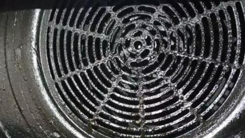

今天村长分享的是关于渔具的一个偏门暴利赚钱小项目，轻松年入10万是没有问题的。
渔具呢它有很多种类，喜欢钓鱼的一定是对渔具是非常感兴趣的，比如说鱼干，鱼钩啊，鱼饵啊，渔具的种类是相当多的，像我们家乡那边有那个水库，每到夏天就会有很多人再钓鱼，这个钓鱼界呢，有句话是这么说，他说玩这个路亚的穷三年，只要你是钓鱼爱好者呢，就会买各种各样的这种钓竿，所以说，这里边是有一个很大的市场的，有市场就有需求，我们就能把它变成一个项目，我们就能去操作。

如何操作渔具这个项目
那么操作这个项目呢，难不难呢，其实我们这么多年最直观的一个做网赚的一个经验来说，做这个项目是相当相当容易的，只要你手里边有100个精准的这种钓鱼爱好者粉丝，那么他们的一个复购或者是长期购买绝对能够养活你了，就是说一个月收入能够在几千到几万块钱完全是没有问题的，只需要你有100个精准的粉丝啊，100个就够了，如果你有1000个的，那我相信你几乎能够实现财务自由，没有多大问题，那么分析这个项目呢，我们从几个点首先肯定是货源。直接去上阿里巴巴上去找就行了。
自己去找几十块钱的，几百块钱不等，然后它还可以一键代发，非常不错，你也可以变成它的一个代理，价格能够更低一点，这个是货源，然后就是引流和成交，引流呢，建议大家用这个视频的形式去做一个推广，因为这种钓鱼嘛，它肯定最直观的还是以视频的形式进行一个展现，那么这种视频呢，它又分为短视频和长视频平台，什么叫短视频，抖音快手火山卫视，什么叫长视频？腾讯爱奇艺优酷土豆，还有这个搜狐这些都属于长视频。
那么我们为什么要用这种自媒体这种视频平台去做这种引流相关的工作呢？
目的其实第1个就是建立自己的一个Ip，让别人知道你是一个钓鱼爱好者或者是一个钓鱼专家，非常专业，这个呢叫做打造自己的IP，打造好IP之后呢，可以带来流量。这个分享的这种视频它以什么为主呢？那必然是关于钓鱼的一些东西，比如说钓鱼经验啊，钓鱼技巧啊，还有你如何选择这种渔具，还有在你身上发生了一些和钓鱼有关系的这种特别有趣的事情，比如说我在爱奇艺上，我看到一个人叫做麦子钓鱼实战，他就是专门分享这种钓鱼视频，就是实战的视频啊，这种播放量都是几万几万的播放量，播放量相当高，然后我又打开了抖音，我在抖音上也看一下，有个人叫钓鱼人XX，其实我关注他还是蛮久了，我在这个7月份的时候关注他那会，他有261万份对1月份，也就是今年7月份，现在呢是10月份三个月的时间，他粉丝现在是多少呢是410万，也就是说三个月的时间，他的粉丝涨了150万，对吧，150万粉丝三个月的时间可以说非常恐怖啊，这个人现在有410万粉丝。

也就是说有410万，精准用户怎么也有四五万左右，四五万左右人加他某信，10个某信号绝对是满了，10个某信号满了之后呢，你每个人成交上一单，一单赚上假如50块钱，这个四五万人加了某些，然后我们客单价是50块钱算，然后转化率按照1%，你想想能够赚多少钱哦，1%的话四五万，四五万是四五百×50，这个你们自己算吧，一个月这个流水绝对是相当相当高的，而且这部分这个钓鱼爱好者呢，他们特别喜欢复购，把这个重复消费的能力是相当高的，所以说一个月赚个几万块钱根本不是任何问题，我说这个钓鱼人照样他有410万的粉丝，我相信他一个月的赚钱能力应该在几十万到几百万，我刚才说的绝对是最少，最少的情况下他肯定在这种几百万左右，每个月都是，毕竟这么多粉丝呢，接广告一个月都能好几万。
还可以选择公众号，公众号可以打造我们的一个品牌和形象，你可以发布我们这里的一个产品信息，然后呢，也可以利用小程序呢，这个小程序有商城嘛，然后也可以去赚钱啊，所以说公众号呢，你也有必要去搭建一下，就这么一个项目，这个就是说引流环节，然后赚钱环节其实就很简单了，就是引流到某信身上，然后通过朋友圈的一个长期的成交教育，再加上你的一个话术的一个引导，因为他们本来就是看你的视频而联系你的嘛，所以说对你是有一定信任度的，这个时候你卖任何东西，他只要申请的粉丝都会特别关注，在这样的的基础上就会选择你就会买单，这个时候你就能赚到钱。
所以说，积累这个第1批粉丝，这个第1批种子用户是相当相当重要的，这个项目呢，基本上这个货源，引流啊成交就讲完了，这里边呢，其实引流环节还想再多讲一点，就是一些有共同兴趣爱好人群聚集的地方啊，我们称之为鱼塘，比如说有哪些鱼塘呢，我们其实也可以去这种专业的群里边，就是这种钓鱼的群里边去引流，那个部落里边还有这个贴吧里边，其实我们都可以去做一个引流，当然你只需要选一个渠道啊，就专注你这个口碑专注于你这一块。
我一定要做到聚焦一个平台，其实这个流量就够你用了，前面就是说今天分享的全套思路，希望大家听了之后呢，对这个钓鱼有一定兴趣的朋友，可以去操作一下，因为操作这个渔具这个项目呢，它要求大家必须对于具有一定的兴趣，并且有一定的研究，不然的话你对这个一点研究都没有，你怎么去录视频啊？对吧，有专业这个爱好者他加你的和你联系交流的时候，你说的话一点都不专业，他怎么能信任你？所以说这期节目呢，它不是适合所有人，它是适合于喜欢钓鱼，对钓鱼感兴趣的人。